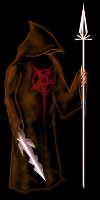
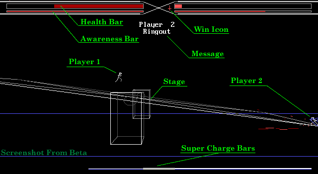
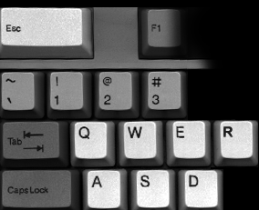
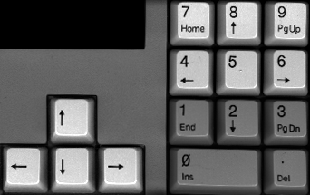
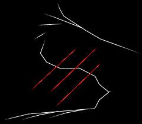

-Loading Stick Fighters Brawl 2 Information Guide-
Intro
Disclaimer
Mechanics
On Screen
Control
Menus
Technical
Credits
Outro
Intro
SFB2
SFB2: Vector Warriors is a Fighting game coded in QBASIC Extended. Unlike other BASIC fighting games that look bad, play bad and are deleted often, I slaved over SFB2 untill I had a game that's fun and easy to play yet unique.
It's not another wanna-be Mortal Kombat (Which I personally don't like as a game).
SFB2 is powered by Slash, a 3D game engine also designed and coded by me. More info on Slash can be found in the Technical section of this document.
Tutorial
By visiting the Dojo you can get some step by step on how to play. This is very helpful to new players and is highly recommended.
This Guide
It is highly recommended that you view this with the latest version of Netscape Communicator in 800x600
At the top of the page you will see the contents of this guide.
By clicking on a category it's info will be displayed for your viewing.
Please note once again that not all browsers are able to view this guide.
This is an html document, all contents within are copyright © Kevin Reems 1998.
Disclaimer
A word of warning, this game displays images of violence, blood, gore
and various acts of human mutilation, slaughter, dismemberment, and
people falling to their death, getting shot, stabbed, lit on fire, electrocuted,
have their gutts ripped out and dumped on the floor, Someone may get
their head caved in, drown, crushed, and/or have their brains blasted
through their face. All the while blood may be squirting all over the screen
leaving pools of death all over the place!
.....Ok, if you can handle that you won't have any problems,
if you think it's offending, sick, twisted and/or evil don't play
SFB2: Vector Warriors.

...You have been warned
Basic Game Mechanics
Two fighters get put in a given stage and beat the piss out of each other until one of them wins the match or is dead.
Matches are best out of three rounds. When one of the fighters KO the other they win the round.
On some stages the fighters may step out of the ring resulting in a Ring Out. This may result in the opponent winning the round or some kind of an ass kicking.
In the event of a death, the fighter still living wins the match regardless of how many rounds anyone has won.
 Unless I upgrade it later this game is currently one player only.
Unless I upgrade it later this game is currently one player only.
On Screen

During play you will see a number of things on screen. The HUD contains three status bars for each fighter.
From the top down they represent the following.
Health - When this is gone the fighter is dead, match over.
Awareness - How 'dizzy' the Fighter is.
When this is gone the fighter is KO and the opponent wins the round.
Awareness recharges when the fighter isn't getting his ass beat or using a special.
Rage - ("Super Charge Bar" in Example) Charged in order to use Super Moves.
Control


| Esc = Options, Exit Current Menu |
Q = Jab |
W = Strong |
E = Toggle Special |
R = Block |
7 = Jump Left |
8 = Jump Up |
9 = Jump Right |
|
A = Short |
S = Roundhouse |
D = Super |
P = Pause |
4 = Left |
5 = Crouch |
6 = Right |
Above are the basic controls during play.
Click the Menus Tab at the top of the page for an explanation of the Esc key.
Q & W are Punches
A & S are Kicks
The Cursor Keys mimic those on the number pad. Although it's recommended you don't use them since they lack Left & Right Jumps.
Special Moves
Press the E key to enable Specials. When these are enabled all four of your attack keys have different, more powerful effects. However these will drain you more then normal moves.
The Special moves your fighter can use are determined by the type of Hands and Feet a fighter has.
Rage & Supers
During the match each fighter sustains more and more Rage toward their opponent. This is displayed by the bar at the bottom of the screen.
When a fighter is at their maximum Rage they can release it in the form of a Super. Do so by pressing D.
Supers are very powerful moves that do devastating damage. When a fighter is being attacked by a super it's often the last thing they see.
Supers are determined by Body type.
Blocking
When Blocking you must put the block up just before your attacked, if it is not timed correctly it will fail. Holding down the block key also tends to fail. It's all in the timing.
Note that the Spacebar may also be used to block.
Menus
By pressing Esc you may enter the Options menu. From this menu you may set a great many settings that control the game.
The first is the Options menu, and contains the following.
OPTIONS
Stage Select
Allows you to pick the stage to fight on.
Use the arrow keys to highlight a stage, press Space to select it.
Note: This option is disabled untill you first fight through all of the stages.
Build Fighter
Opens the Build Fighter Window (See below).
Settings
Opens the Settings Window (See below).
Load/Save
Let's you Load, Save, Delete, Reset all of your settings, including the current stage and your built fighter.
Demo Mode
AI controls both fighters on one of the first three stages.
Restart
Restarts SFB2 (You will lose your settings if you haven't saved them).
Quit
If your some odd reason your done playing SFB2 select this.
BUILD FIGHTER
The ability to Build your character is something a bit new to most fighting games. In SFB2 you don't select from a handful of per-made characters. Instead you build one using a verity of parts. Each of which have different attributes.
 Building is as easy as selecting a type and color for each body part. To the right of the window is a realtime image of your fighter (and perhaps a little more). As you make selections they will be displayed here.
Building is as easy as selecting a type and color for each body part. To the right of the window is a realtime image of your fighter (and perhaps a little more). As you make selections they will be displayed here.
By selecting MORE you can toggle between two menus. The other menu has the less important options, Name, Hair, etc. The Opponent Colors option which may be set to Multi or Solid. This won't take effect until the beginning of the next match. Because the computer isn't always the best at picking descent war paint you may want to set this to Solid.
SETTINGS
Screen resolution
Let's select from three screen modes, the uglier the faster.
Frame Skipping
Let's you trade smooth animation for speed. Select no skipping only if you have a high-end system.
This greatly effects perfomance.
Game Speed
If your computer is so damn powerful the game runs too fast, you can slow it down here.
Clear Method
Normally you'll want to leave this alone. It selects how Slash should go about clearing the screen before it starts rendering the graphics. There are a few modes to choose from but the only two that you'd normally want to use are CLS or LINE, which have the same effect but one may be faster then the other on some systems.
Stars
Select how many stars to display. This can greatly effect performance on some stages.
Particles
The maximum number of particles that may be displayed at a time.
Select from Zero to 90.
i16 Images
There are three settings for the i16 Images,
Show All - Always shows i16 images
Don't show on Stage select - Shows all i16 except on the stage select screens.
No i16 - Never shows i16 images
Graphic Details
Selecting low details will disable some graphic details to speed up the game. There are four categories, Stage, Fighters, HUD, and Smears.
Stage - The background graphics
Fighters - The detail of the Fighters
HUD - Extra eye candy in the health bars etc.
Smears - The mess that results on the floor
Sound
Here you can turn the sound off or select the Sound Quality.
Technical

About the game itself:
SFB2: Vector Warriors was coded in 100% BASIC using QBASIC Extended.
It's built on the Slash 3D game engine which was also made by me.
Slash allows for 3D wireframe graphics, Sound Blaster FM sound, Particles,
and many other goodies to make life easier on the programmer.
The source code to Slash will/was release(d) a little after SFB2 with info
on how to make your own Slash based games. More info on Slash may be
downloaded from my website.
Running SFB2:
The game is not compiled, but comes with QBx.EXE which is used to run the
game. You do not need to have a full version of BASIC installed on your
system to run SFB2.
Running the file SFB2.BAT will launch QBx and run the game. To exit the
game simply press Esc and select Quit to be returned back to your operating
system. Before Running the game using QBx.exe please review QBx.txt for some legal dirt.
Performance:
A Pentium is highly recommended to run at an acceptable speed.
SFB2 has only been tested under Windows 9x however, it run may run up to twice as fast in DOS [Mode].
A writable C:\ is needed for a path info file, however this file is not required.
100% Sound Blaster Compatible sound cards are also supported but only using standard settings.
Here's what to do if the game runs like shit.
Press Esc and select Settings to open the Settings Window.
The following settings effect game speed the most;
Game Speed
Screen Resolution
Frame Skipping
Stars
Particles
By settings these Low (fast) you should be able to increase game speed.
Try messing with all the settings to fine tune a balance between speed and
pretty graphics and don't forget to save your settings in the Options menu!
DOS Mode VS. Win9x:
Running the game in DOS can greatly improve it's speed. The down side is you may not have enough conventional memory to run it and you may not get any sound.
Win9x runs slower but has much less hassle and generally supplies the memory required.
Troubleshooting:
In the event on an error Slash will display a message. In most cases is can figure out what's wrong and tell you how to resolve the problem.
If it's unable to determine the cause of the error it will respond Unknown. Unknown errors tend to prevent the program from running since there's no known remedy.
When presented with an error you will see at the top of the screen a discription of what probably happened, what Slash can do about it, as well as what you should do.
Sometimes if you install a new version of the game over another version there are problems with the SLASH.DAT file. If something's wrong with this file a variety of weird stuff may result. If you ever suspect something wrong with it it's recommended that you delete it (Press D).
When Slash can't find this file or it's a bad version it will allow you to run using default settings. You can then choose new settings and save a new SLASH.DAT file.
If all seems hopless you may e-mail me and I'll see what I can do. If you do, make sure to include the version number.
 See also:
See also:
FAQ
Credits
Everything that went into this game is credited to me (Kevin Reems a.k.a. LBt1st) with the
exceptions of the following,
Sound:
Bostrom Design is responsible for the original sound code, which was edited and used with permission.
Stage Concepts:
Stage-09 Steve Arntzen
Stage-10 Russell Dubay
Stage-11 Tsugumo
Stage-12 Tsugumo
Beta Testing:
Magik
Pyrus
Skywise
Tsugumo
And probably some others...
Promotion:
Nekrophidius
Pyrus
RATM Boy
Tsugumo
Special Thanx to:
Steve Arntzen
Russell Dubay
Hydroxide
Pyrus
RATM Boy
Skywise
Tsugumo
Tofu
And the rest of "The BASIC Big Guns".
Everyone else who has supported me over the years with this project.
All the people I forgot to mention above.
The Guys at Netscape, for bringing us Layers which has made this Guide much cleaner.
Outro
Thank you for taking the time to read this. I hope you enjoy playing SFB2: Vector Warriors as much as I did creating it. I feel it's one of the most complete games ever written in BASIC and am proud to prove that BASIC still lives. Any questions or comments may be directed to,
lbt1st@cyberdude.com
As of this writing my URL is,
http://surf.to/expression
Thanx - October 1998